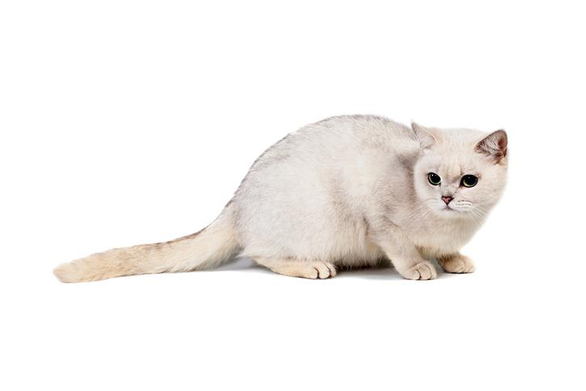

Proviene de Reino Unido, donde una gata burmesa se cruzó con un macho persa chinchilla por el año 1981. Este encuentro ocurrió de manera fortuita, por lo que la primera camada de la raza que hoy conocemos como burmilla surgió de forma no planificada y natural. Ahora bien, ¿por qué el nombre "burmilla"? Muy sencillo, los primeros en descubrir la raza la bautizaron así por la combinación de "burmés" y "chinchilla". Puesto que apenas han transcurrido tres décadas desde que nacieron los primeros ejemplares, se considera que esta es una de las razas de gatos más recientes. De hecho, la raza no ha sido reconocida ni siquiera en su país de origen.
Tiene un tamaño mediano, con un peso comprendido entre los 4 y los 7 kilogramos. Su cuerpo es compacto y sólido, al igual que sus extremidades, que tienen una musculatura desarrollada, siendo más finas y ligeramente más cortas las patas delanteras. Su cola es recta, de gran longitud y acabada en una punta redonda. Su cabeza es ancha y redonda, con los carrillos llenos, unos ojos rasgados de color verde delineados por unos párpados de borde negro. Las orejas son de tamaño medio, de forma triangular con la punta redondeada y la base ancha.

Se trata de un gato atento, cariñoso y muy apegado a su familia. Quienes conviven con un burmilla aseguran que se trata de un gato muy bonachón, que adora la compañía y acostumbra a llevarse bien con todos los miembros del hogar, ya sean otras personas, gato o prácticamente cualquier otro animal. En definitiva, es un felino muy tolerante, indicado especialmente para familias con niños, ya que le encanta pasar tiempo con ellos jugando y recibiendo mimos. El burmilla es un gato muy equilibrado, puesto que aunque adora los juegos y las actividades, es muy tranquilo. De esta forma, resulta extraño que muestre una actitud nerviosa o inquieta. En caso de mostrarse de esta forma, querrá decir que algo no anda bien, por lo que puede esta sufriendo un problema de salud o estrés.

Requiere de pocas atenciones y cuidados para estar en buenas condiciones. En cuanto a su pelaje, por ejemplo, solo necesita recibir un par de cepillados semanales para que luzca aseado y brillante. Por otro lado, hemos de prestar atención a la dieta del gato, ya que debemos proporcionarle una alimentación de calidad, ajustada a sus necesidades nutricionales y a su actividad física, la cual determinará su gasto calórico diario y sus requisitos alimenticios. También resulta vital destacar que ha de tener agua fresca a su disposición en todo momento, de lo contrario podría deshidratarse. Por último, es importante tener presente el enriquecimiento ambiental. A pesar de que estamos ante un gato tranquilo, recordemos que adora jugar y entretenerse, por lo que será fundamental proporcionarle juguetes variados, rascadores de varias alturas, etc. Así mismo, tendremos que destinar parte del día a jugar con él, disfrutar de su compañía y darle todos los mimos que podamos.

No presenta enfermedades congénitas ni tiene especial inclinación por sufrir ninguna afección por encima de otras razas. Aún así, no ha de olvidarse que, al igual que cualquier otro gato, ha de recibir sus vacunas obligatorias y desparasitaciones, así como pasar revisiones veterinarias regulares que permitan detectar cualquier anomalía lo antes posible. Además, se recomienda vigilar el estado de su boca, ojos y orejas, realizando las limpiezas pertinentes con los productos y procedimientos más oportunos en cada caso. Igualmente, es importante mantener al gato burmilla ejercitado y bien alimentado, favoreciendo así el buen mantenimiento de su estado de salud. Con todos estos cuidados, la esperanza de vida media de un burmilla oscila entre los 10 y los 14 años.